Lectorium Guide — Short Version
Передстартовий чекліст
Живлення
Усі наступні прилади підключені до живлення та мають світлову індикацію:
- Kramer 20-port audio matrix (комутатор звуку)
- Toa Multichannel Power Amplifier (підсилювач звуку)
- 4К HDMI 4х4 Matrix Switcher (комутатор відео)
- Мікрофонні бази
Мікрофони
- Ручні мікрофони стоять на зарядній станції, а зарядна станція подає світловий сигнал
- Мікрофони увімкнені
MacBook
- Увімкнений і розблокований (Пароль: Qwerty)
- До нього підключений USB-Hub
- Підключений до живлення через USB-Hub і має індикацію заряджання вгорі екрану на позначці батареї
- Підключений до Wi-Fi "Event_5Ghz" (Пароль GenesisTech)
AppleTV / проєктор
- AppleTV увімкнений та має світлову індикацію
- Проєктор увімкнений та виводить стартове зображення Apple TV
- MacBook підключений до AppleTV
- Зображення виводиться на екран як Extended Display
- В Settings > Sound > Output > Обрано
- School 1 AirPlay - для першого лекторію
- School 2 AirPlay - для другого лекторію
Клікер
- Підключений до USB-Hub через USB роз'єм
- Виконує свої функції
XENYX Q802USB Мікшерний пульт (звук з мікрофонів в MacBook)
- Підключений до MacBook через USB роз'єм USB-Hub
- В Settings > Sound > Input обрано USB Audio CODEC
- В Settings > Sound > Input Level є графічний сигнал коли розмовляєш в мікрофон
Камера
- Підключена до живлення
- Підключена до Macbook через окремий Type-C роз'єм
- Має світлову індикацію
Zoom/Google Meet
Обрані потрібні мікрофон, колонки та камера:
- Мікрофон - USB Audio CODEC
- Колонки:
- School 1 AirPlay - для першого лекторію
- School 2 AirPlay - для другого лекторію
- Камера - Meeting Owl Camera
Тестовий учасник у Meet / Zoom
Зайти в Zoom або Google Meet (можна зайти зі свого ноутбуку) та перевірити:
- чи є звук:
- говориш в мікрофон — тебе чути з твого ноутбуку
- говориш в свій ноутбук - тебе чути з колонок лекторію
- чи є відео з камери
Крок 1: Увімкнення мікрофонів
🔍 Що робити:
Гарнітура ("Петлічка"):
Як виглядає:
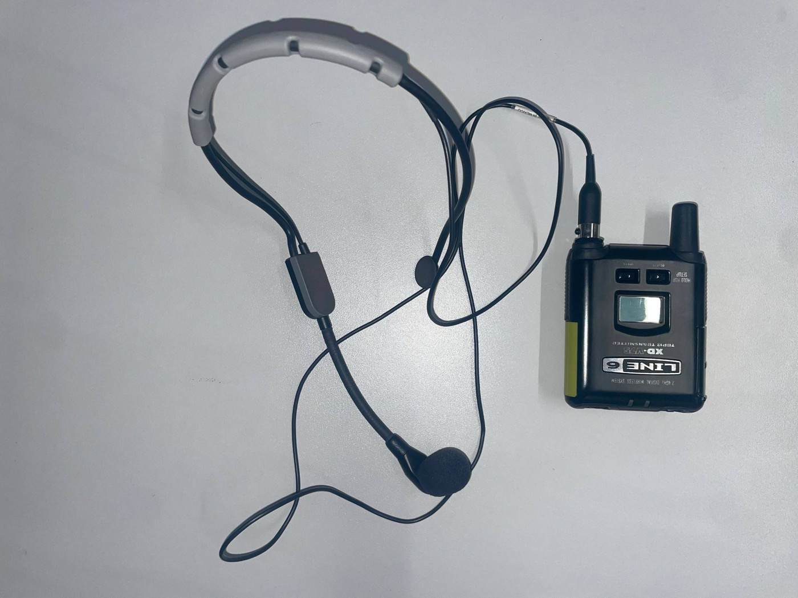
- Відкрити бічну кришку гарнітури. Затиснути на бічну кнопку та підняти кришку догори
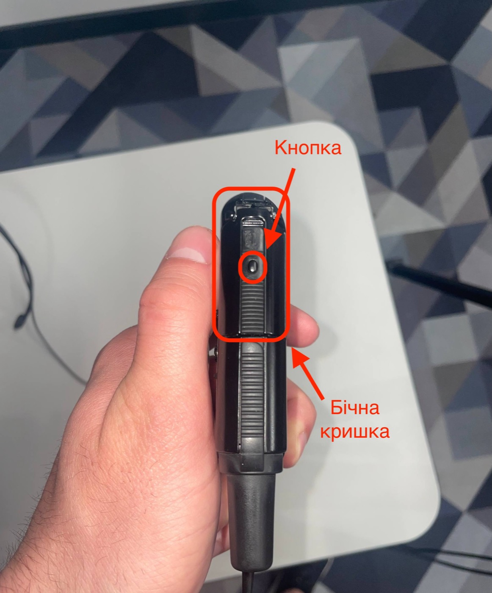
- Вставити батареї згідно підказок з внутрішньої сторони кришки та на самих батареях (+ до +, - до -)
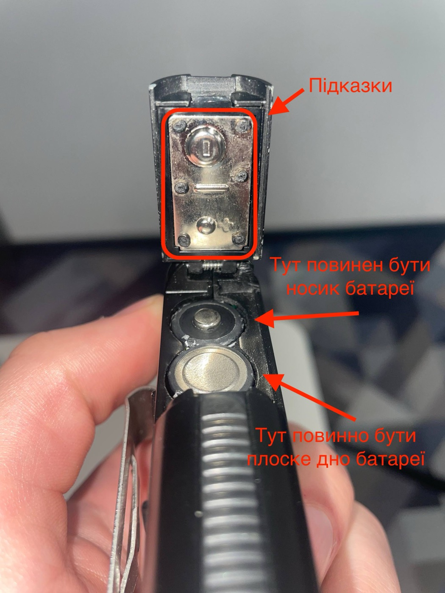
- Увімкнути гарнітуру за допомогою перемикача Off/On
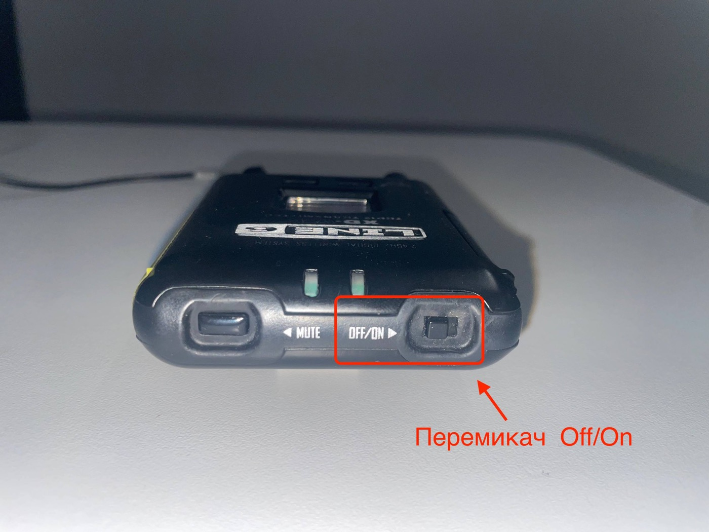
Увімкнена гарнітура:
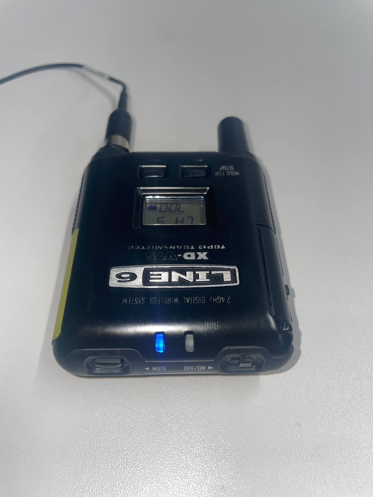
📷 Відео інструкція:
Відкрити відео
Ручний мікрофон:
Взяти мікрофон зі станції яка знаходиться в Lectorium1 в технічному шкафу. Зелений мікрофон для Lectorium1 і Синій для Lectorium2.
Як виглядає мікрофон: (Приклад: мікрофон Lectorium2)
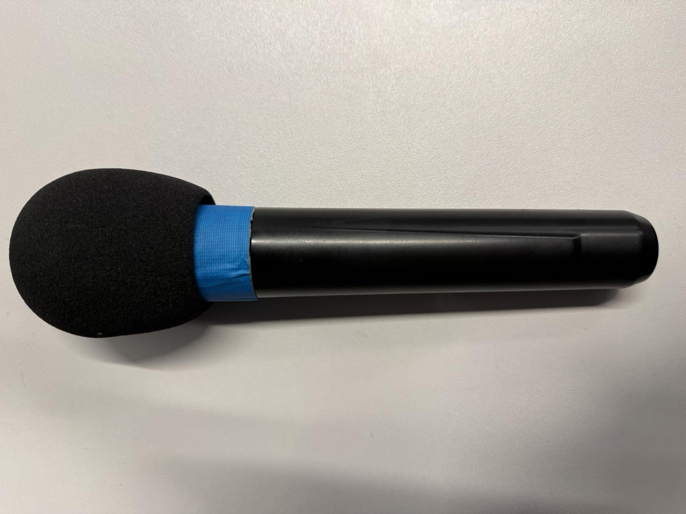
Увімкнений мікрофон
Увімкнений мікрофон має червону індикацію на нижній частині мікрофону, поруч з перемикачем "on/off". Якщо лампочка не горить, перемкни перемикач.
✅ Готово, якщо: і гарнітура, і ручний мікрофон мають мати світлову індикацію. Коли кажеш щось в мікрофон, йде в Lectorium.
Крок 2: Запуск та підключення до пристроїв для виведення зображення
Увімкнути Проєктор
🔍 Що робити:
Взяти пульт білого кольору, що знаходиться на верхній поличці шафи та натиснути кнопку з символом ⏻ направляючи його на проєктор.
🖼️ Як виглядає пульт:
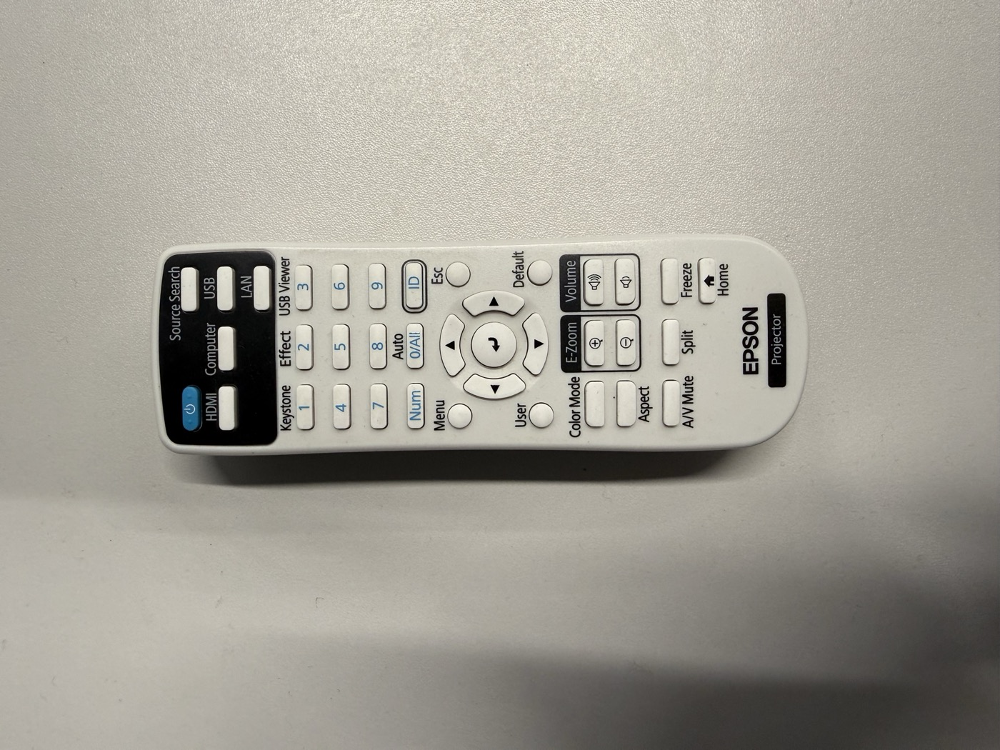
🧑🔧 Що має статись:
Проєктор має подати звуковий сигнал (піщання), увімкнутись та вивести зображення. Час очікування +- 10 секунд.
📷 Відео інструкція:
Відкрити відео
⚠️ LECTORIUM 2: НЕ ЗАПУСКАЄТЬСЯ ПРОЕКТОР
- Напишіть Техніку щоб він перезавантажив смарт розетку
⚠️ LECTORIUM 2: ПРОЕКТОР ВИДАЄ СІРИЙ ШУМ
З лівої внутрішньої частини технічного шкафа висить пристрій Kramer. В нього є кабель живлення, який треба відкрутити, а потім витягнути. Після 5-секундного очікування можна підключати кабель.
Підключення до проєктора
🔍 Що робити:
- Відкрити та увімкнути MacBook локації, що лежить на столику біля шафи (Пароль: Qwerty)
- Відкрити меню елементів керування через віджет у верхньому правому кутку екрану, біля дати та часу.

- У меню, що з'явилось, натиснути на віджет дублювання екрану

- В новому вікні обрати потрібний пристрій: для першого лекторію це school 1, для другого - school 2

- Після цього введіть на вашому макбуці код, який з'явиться на екрані проектора
УВАГА! Код кожного разу різний


- В наступному вікні оберіть 1 - "Extended Display" та натисніть 2 - "Extend Display"

УВАГА! Якщо вікно з кроку 6 не з'явилось, потрібно натиснути на іконку дублювання екрану
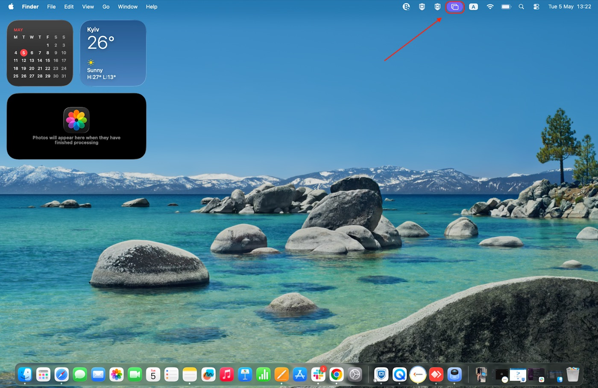
далі натиснути "Change"
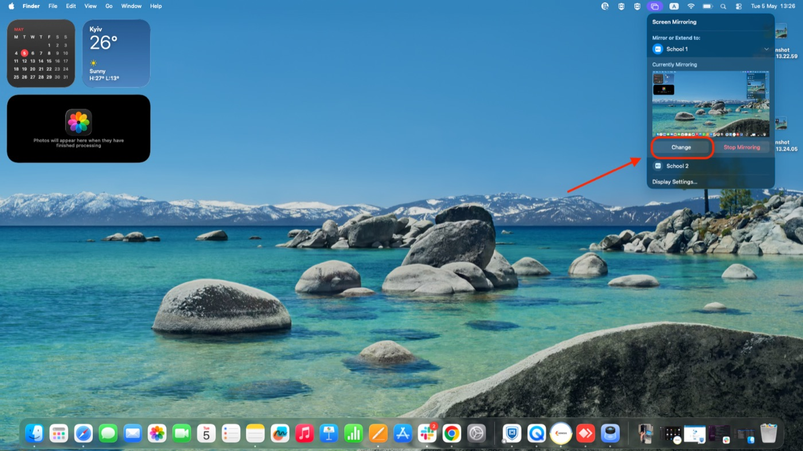
та знову повторити пункт 5
🧑🔧 Що має статись:
Проектор виводить зображення з Macbook

✅ Готово, якщо:
- AppleTV та Проєктор увімкнені
- Зображення з MacBook (заставка) виводиться з проєктора
Крок 3: Виведення презентації на екран
Google Slides
🔍 Що робити:
- Відкрити презентацію
- "Перетягти/перенести" вкладку з презентацією вправо на Extended Display підключеного проектора
- Натиснути "Slideshow"
Що має статись:
- Презентація виведена на екран проєктора
📷 Відео інструкція:
Відкрити відео
Power Point
🔍 Що робити:
- Відкрити презентацію
- В меню обрати Slide Show > Play from Start

Що має статись:
- На Extended Display підключеного проектора виведеться презентація, а Macbook буде працювати як підказчик

Keynote
🔍 Що робити:
- Відкрити презентацію
- Натиснути на "Play"

Що має статись:
- На Extended Display підключеного проектора виведеться презентація, а Macbook буде працювати як підказчик

Крок 4: Підключення клікера
🔍 Що робити:
- Знайти клікер в шафі на верхній поличці
- Дістати з нього "хвостик"

- Підключити "хвостик" до MacBook через USB роз'єм USB-Hub

- Перевести курсор в праву сторону за межі екрану ноутбуку, ви його побачите на додатковому екрані, Extended Display (той, що виводиться з проектора). Потрібно клікнути один раз на презентацію, щоб він почав працювати на екрані з презентацією
Що має статись:
- Клікер виконує свої функції
Крок 5: Перевірка звуку та відео в трансляції
Google Meet
🔍 Що робити:
- Під'єднатись до гугл міт
- Зайти в налаштування аудіо (3 крапки біля мікрофону)
- Як мікрофон обрати - USB Audio CODEC
- Як динамік обрати - School 1 (AirPlay) для першого лекторію, School 2 (AirPlay) - для другого

Якщо аудіо налаштовано вірно, то при говорінні в мікрофон біля мікрофону ви побачите анімацію у виді звукової хвилі.
- Зайти в налаштування відео (стрілка вгору біля відеокамери)
- Як відеокамеру обрати - Meeting Owl Camera

Zoom
🔍 Що робити:
- Під'єднатись до Zoom
- Зайти в налаштування аудіо (стрілка вгору біля мікрофону)
- В графі "Select a microphone" обрати - USB Audio CODEC
- В графі "Select a speaker" обрати - School 1 для першого лекторію, School 2 - для другого

- Зайти в налаштування відео (стрілка вгору біля відеокамери)
- Як відеокамеру обрати - Meeting Owl Camera

✅ Готово, якщо: для перевірки потрібно під'єднати ще одного учасника
- Коли ми говоримо в мікрофон, додатковий учасник чує нас в себе на ноутбуці
- Коли говорить додатковий учасник, ми чуємо його в лекторії на колонках
- В трансляції: і ми, і додатковий учасник бачимо зображення з камери
Крок 6: Виведення презентації в онлайн трансляцію
Google Meet
Що робити:
- Натиснути на кнопку "Поширити екран"

- У вікні, що з'явилося, обрати:
- Entire Screen
- Screen 2
- Обов'язково обрати "Also share system audio", якщо у вас є відео та звук в презентації
- Share

- Після цього поверніться до розділу "Крок 4: Виведення презентації на екран"
Що має статись:
Глядачі в онлайні побачать презентацію
Zoom
Що робити:
- Натиснути на кнопку "Share"

- У вікні, що з'явилося, обрати:
- Desktop 2
- Обов'язково поставити галочку біля "Share sound", якщо у вас є відео та звук в презентації
- Share

- Після цього поверніться до розділу "Крок 4: Виведення презентації на екран"
Що має статись:
Глядачі в онлайні побачать презентацію
🔴 Відключення лекторія (в зворотньому порядку!)
ВАЖЛИВО: Відключаємо в зворотньому порядку до увімкнення!
1. Вимкнення мікрофонів
Ручний мікрофон:
- Поставити ручний мікрофон в зарядну станцію, таким чином щоб коннектори були з'єднані з коннекторами зарядної станції.
(Якщо дивитись на мікрофон "фронтально", то його конектори повинні бути з протилежної сторони від "глядача")
🖼️ Як це виглядає
Фронтальна частина

Задня частина
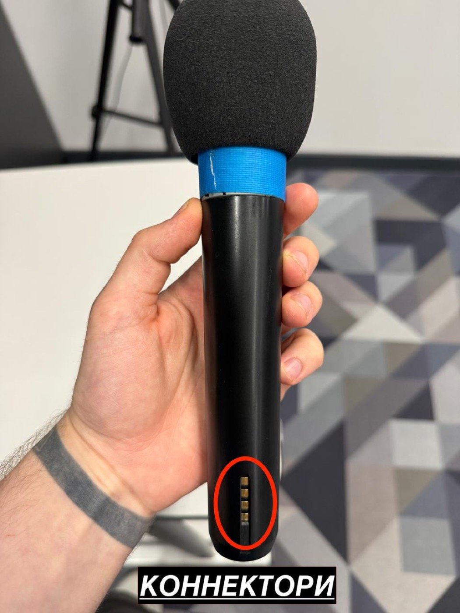
📷 Відео інструкція:
Відео
Гарнітура:
- Вимкнути за допомогою перемикача On/Off
- Відкрити бічну кришку гарнітури та дістати батарейки та поставити їх на зарядну станцію. Плюс батарейки повинен бути направлений до екрана зарядної станції.
Де знаходиться станція
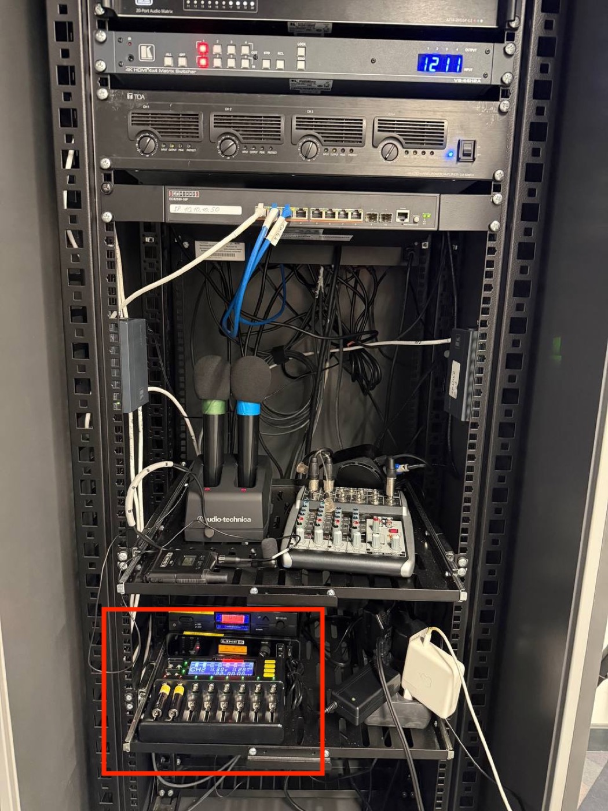
Зарядна станція і як ставити батарейки
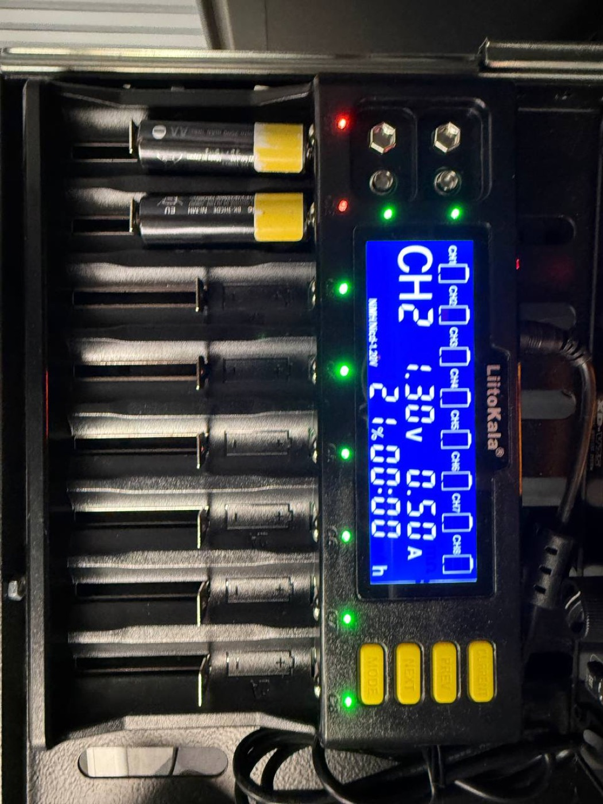
2. Вимкнути проектор
- Взяти пульт від проектору з верхньої полиці шафи, та натиснути на клавішу вимкнення з символом ⏻ в напрямку проектора
- Через декілька секунд з'явиться прохання про підтвердження вимкнення
- Натиснути на клавішу вимкнення ще раз
- Покласти пульт на верхню полицю в шафі (туди, звідки брали, дивись Крок 2)
3. Закрити MacBook
Да, просто закрий макбук)
🆘 Що робити, якщо щось не працює
📞 Кого кликати на допомогу
2 лекторій: не вмикається проектор
Рішення
Зв'язатися з інженером, щоб перезавантажив проектор (виконується в дистанційному режимі).
2 лекторій: проектор увімкнувся, але не виводить зображення / виводить шум / не ловить сигнал від AppleTV
Приклад:

Рішення
- Перезапустити Kramer
- Відкрутити кабель живлення
- Від'єднати кабель живлення
- Після того як Kramer вимкнеться, під'єднати кабель живлення
- Закрутити кабель живлення
- Перезапустити AppleTV
📷 Відеоінструкція:
Відкрити відео
Відсутній звук з колонок
Рішення
Перевірити Settings > Sound > Input та Output.
Правильні налаштування:
- Input - USB Audio CODEC для обох лекторіїв
- Output:
- School 1 AirPlay - для першого лекторію
- School 2 AirPlay - для другого лекторію
Онлайн не чує офлайн
Рішення
- Перевірити, чи не вимкнений звук на самих мікрофонах
- Гарнітура: натиснути на клавішу Mute на 2 секунди
- Ручний мікрофон: потрібно підняти боковий перемикач з червоного на зелений (Дивись Крок 3)
- Перевірити, чи правильні налаштування обрані в Zoom/Google Meet (Дивись Крок 5)
- Перевірити Settings > Sound > Input
- Правильні налаштування: Input - USB Audio CODEC для обох лекторіїв
- (Дивись Крок 4 > Підключення звуку)
- Перевірити наявність візуального сигналу в Settings > Sound > Input > Input Level, коли говорите в мікрофон
- (Дивись Крок 4 > Підключення звуку)
- З Кроку 4 > Підключення звуку > Пункт 4: від'єднати кабель, почекати декілька секунд, підключити його знову, повторити пункти 1-4
Офлайн не чує онлайн
Рішення
- Перевірити, чи правильні налаштування обрані в Zoom/Google Meet (Дивись Крок 5)
- Перевірити Settings > Sound > Output
- Повинно бути обрано: School 1 AirPlay для першого лекторію, School 2 AirPlay для другого лекторію
Не працює AirPlay/AppleTV/Проектор
Рішення
- Перезавантажити проектор
- Перезавантажити AppleTV
Не йде звук з презентації в офлайн
Рішення
Перевірити Settings > Sound > Output.
Повинно бути обрано:
- School 1 AirPlay для першого лекторію
- School 2 AirPlay для другого лекторію
Не йде звук з презентації в онлайн
Рішення
- Зупинити "Шерінг екрану"
- Ще раз повторити Крок 6
- Обов'язково перевірити, чи стоїть галочка біля: Google Meet - Also share computer audio; Zoom - Share sound
Не підключається Камера
Рішення
- Перевірити кабель живлення, чи підключений він до розетки
- Перевірити, чи підключена камера до MacBook через ОКРЕМИЙ Type-C роз'єм
- В GoogleMeet/Zoom перевірити, чи правильно обрані налаштування (Дивись Крок 5)
Не працює клікер
Рішення
- Перевірити, чи підключений він до MacBook через USB-Hub
- Перевести курсор на Extended Display (той, що виводиться з проектора) та клікнути один раз на презентацію, щоб він почав працювати на екрані з презентацією
Проєктор вивів меню
Приклад:

Рішення
- Взяти пульт від проєктора
- За допомогою стрілочок обрати потрібний пристрій, що виводить AppleTV, та натиснути на середню кнопку "Enter"
В даному випадку це HDMI 3